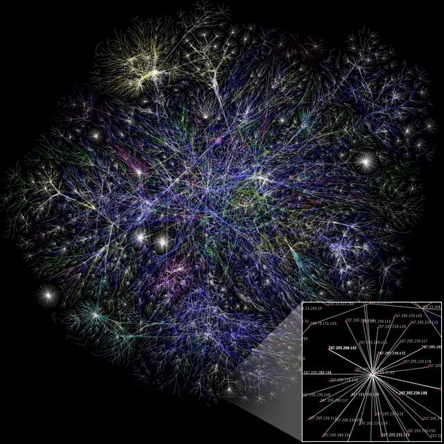

About the Web¶
The internet is a big network of computers, all connected. Here’s a picture:
In reality there are many more, of course! Let’s think about what needs to happen for you to see this web page. This page is on another computer – saved on a disk just as it would be on your computer. The other computer’s name on the network is tullo.co.uk.
Requests and responses¶
Your computer (or phone) needs to send a request for this information. This will pass through many other computers on the way. Once the request is received, the information will be sent back. It doesn’t have to go the same way each time!
We refer to the computer making the request as a client and the computer responding to it as a server. Usually servers don’t have a screen or keyboard, they are just connected straight to the network – that’s how they interact with the world. They are sometimes powerful, in order to quickly handle large numbers of requests. Other than that they are very similar to the computer on your desk, they have files on a disk, and can run programs.
HTML¶
When a web page is sent to your computer, it will be in HTML. This is a language which can represent the content and structure of a page – how text is divided, which images will be included, and so on. To see what it looks like, you can ask your web browser:
- Firefox or Chrome
Right-click and “View Page Source”
- Internet Explorer
Right-click and “View Source”
- Edge
Press F12 to start Developer tools, then right-click and “View Source”
- Safari
Preferences → Advanced and check “Show Develop menu in menu bar” (this will be useful later, too). You can then choose Develop → Show Page Source
You’ll see that all the content of the page is in there. The extra information in the tags help to give the document structure.
For example:
<title>About the Web</title>
This sets the text that appears in the title bar of your browser window.
To give another example, a link to this page looks like this:
<a class="reference external" href="http://tullo.co.uk/jspsych_aarhus/web.html">link to this page</a>
CSS¶
That’s not the whole story, though. As well as the text, there also need to be instructions on how to show it. This includes things like font, colour, line spacing and so on.
Near the top of the page you’ll see:
<link rel="stylesheet" href="_static/alabaster.css" type="text/css" />
This tells the browser to use a stylesheet, telling it how to format the page.
Let’s take a look at it. Click on the text after href= in your
“view source” window. (If that doesn’t work, use
this link here).
You’ll have to scroll down!
Just after the heading “body styles”, you’ll see this:
a {
color: #004B6B;
text-decoration: underline;
}
This relates to an a tag, which is a text link. Remember that the link we
saw above used a tag starting with <a href=" .....
When the web browser sees the <a ....> .... </a> it uses the information
in the relevant CSS to format the link.
color: #004B6B;is a way of specifying a particular shade of blue. (There are easier ways for more common colours!).
text-decoration: underline;tells the browser to underline the text.
Looking back at the displayed page, you can see that the link is indeed blue and underlined.
JavaScript¶
JavaScript is a language that can be used to run a program in your web browser. It can be used to change the contents of a page, and can respond to the user’s actions (for example, mouse clicks or key presses).
This is important because it gives us a way to run a program inside the web browser. Without JavaScript, the only way to interact with the user would be by loading a different page, or loading the same page again.
This is what jsPsych uses to run the experiment. All you need to do is write some code to describe what you what to happen in the experiment – what stimuli should be shown, and what kind of responses should be collected.
Thanks!¶
With gratitude to the DjangoGirls intro, for inspiration.
Internet image: By The Opte Project CC BY 2.5 (http://creativecommons.org/licenses/by/2.5 ), via Wikimedia Commons, original source here .

{kind=link}
{kind=link}